flowchart TD subgraph A[Falsch] L[Lesen] --> S[Schreiben] end subgraph B[richtig] L2[Lesen] <--> S2[Schreiben] end
4 Schreiben
4.1 Lernsteuerung
4.1.1 Lernziele
- Sie wissen, wie man einen Theorieteil aufbauert.
- Sie wissen, wie man eine Forschungsarbeit gliedern kann.
- Sie kennen die Prinzipien des wissenschaftlichens Schreibstils.
4.1.2 Position im Lernpfad
Sie befinden sich im Abschnitt “Schreiben” in Abbildung 1.2.
4.1.3 Überblick
Dieses Kapitel gibt eine Einführung in das wissenschaftliche Schreiben. Es empfiehlt sich, einschlägige Literatur zur Vertiefung zu konsultieren.
4.1.4 Mindmap zu Büchern des wissenschaftlichen Arbeitens
Wissenschaftliches Schreiben ist ein Teilgebiet des wissenschaftlichen Arbeitens. Daher ist es nützlich, entsprechende Bücher zu konsultieren. “Konsultieren” soll hier andeuten, dass Sie nicht einfach alle Bücher zu dem Thema von vorne nach hinten lesen, sondern dass Sie sich einen intelligenten Überblick verschaffen. Ein Weg dazu ist, ein Mindmap der Gliederung (bzw. ihrer wesentlichen Punkte) eines Buches zu erstellen. Das ist Ihre Aufgabe in dieser Übung.
Recherchieren Sie ein Buch zum wissenschaftlichen Arbeiten und erstellen Sie eine Gliederung! Sie können ein Buch aus dieser Liste wählen:
4.2 Gliedern
4.2.1 Gliedern Sie Ihren Schreibprozess
Okay, Sie haben viel gelesen. 1, 10, 100, sagen wir 30 Fachartikel. Gut. Was jetzt? Fertig mit Lesen, los geht’s mit Schreiben?!
Nein (s. Abbildung 4.1). Lesen und Schreiben sollten sich abwechseln.
Es bietet sich an, frühzeitig mit (etwas) Schreiben zu beginnen. Hilfreich ist es, wenn Ihre Gliederung sauber ausgearbeitet ist. Dann haben Sie nur einen überschaubaren Abschnitt zu formulieren. Und vor allem: Wenn Sie mit dem Formulieren (d.h. Schreiben) beginnen, ist die Schwerarbeit bereits getan: Das Denken. Sie werden sich also (verhältnismäßig) leicht tun mit dem Schreiben.
Ein nicht zu unterschätzender Nutzen des Schreibens ist, dass er die Gedanken sortiert. Man könnte zugespitzt sagen: Der Nutzen des Schreibens ist nicht das Schreiben, sondern das Unterstützen beim Denken.
4.3 Gliederung einer Forschungsarbeit
Wie bei vielen Dingen des wirklichen Lebens, so gibt es auch für eine Gliederung einer wissenschaftlichen Arbeit nicht nur eine Lösung. Das bedeutet aber nicht, dass jede Lösung gleich gut wäre (wie im wirklichen Leben auch). Für eine empirische, quantitative Arbeit in z.B. der Psychologie ist folgende Gliederung des Hauptteils etabliert:
- Einleitung
- Forschungsproblem, Forschungsfrage
- Relevanz des Themas
- Ggf. aktuelle oder persönliche Bezüge
- Theorie
- Forschungsstand (Theorien, Befunde) zu den Hypothesen
- Darstellung von Theorie, Belegen (Forschungsbefunden) und Ihrer Bewertung
- Methode
- Alles empirisches “Handwerkszeug”, das man braucht, um die Studie nachzuvollziehen (reproduzieren)
- Ergebnisse
- deskriptive Ergebnisse
- Modellierung und Inferenzstatistik
- sonstige (explorative) Befunde
- Diskussion
- Zusammenfassung des Vorgehens und der Ergebnisse
- Interpretation
- Einordnung der Ergebnisse in die Literatur
- Kritische Auseinandersetzung mit der Studie
- Ausblick
- Transfer
Ein fünfschrittiger Ablauf, die klassische Gliederung sozusagen, die auch für eine studentische Arbeit (empirisch, quantitativ, sozialwissenschaftlich) empfehlenswert ist. Für jeden der fünf Schritte ist grob angegeben, was man in jeweiligen Teil schreien kann.
Aber der Hauptteil macht nicht die ganze Arbeit aus, er ist sozusagen in einen Vorspann und Nachspann eingebettet:
- Titelblatt
- ggf. Sperrvermerk
- Abstract
- Abbildungs- und Tabellenverzeichnis
- Inhaltsverzeichnis
- Hauptteil
- Literaturverzeichnis
- ggf. Anhang
- Ehrenwörtliche Erklärung
🧑🎓 Wie groß ist der Teil XYZ?
👨🏫 Tabelle 4.1 Tabelle 4.1 gibt Ihnen eine grobe Richtlinie, wie groß der Anteil der verschiedenen Kapitel des Hauptteils sind.
| Anteil | Kapitel | Kommentar |
|---|---|---|
| 5% | Einleitung | Die Einleitung ist kurz zu halten (ca. 1 Seite) |
| 40%-60% | Theorie | Der Theorieteil ist das längste Kapitel |
| 10% | Methode | Verwendet man ungewöhnliche oder wenig standardisierte Methoden, so wird der Methodenteil umfangreicher |
| 10%-30% | Ergebnisse | Im Methodenteil sollten keine Analyseverfahren erläutert werden, sofern diese (dem avisierten Auditorium) allgemein bekannt sind. |
| 10%-30% | Diskussion |
Übrigens passen auf eine Textseite ca. 300 Wörter.
4.4 Abschnitte
4.4.1 Titelseite
So könnte eine Titelseite aussehen, s. Abbildung 4.2.
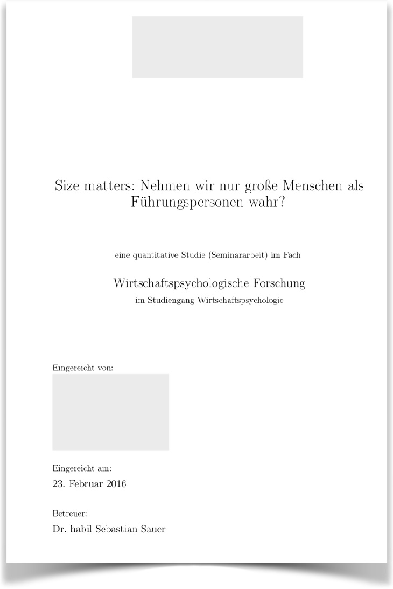
Die Titelseite beinhaltet …
- den Titel der Arbeit
- den Namen der Hochschule und des Studiengangs
- bei einer Seminararbeit den Namen des Dozenten und der Lehrveranstaltung
- bei einer Abschlussarbeit den Namen des Erstgutachters
- Name,
- die Matrikelnummer
- die Anzahl der Wörter des Hauptteils
- das Datum der Abgabe
Der Titel ist das Wichtigste; stellen Sie ihn in den Fokus: groß, zentral platziert mit Platz außen herum; das Zweitwichtigste ist Ihr Name. Stellen Sie alles andere in den Hintergrund.
4.4.2 Abstract
Ihr Arbeit soll einen Abstract aufweisen. Der Abstract ist eine stark verkürzte, prägnante und wertfreie Darstellung der wissenschaftlichen Arbeit. Der Umfang beträgt ca. 150 bis 250 Wörter. Der Abstract steht zu Beginn der Arbeit (nach dem Deckblatt). Der Abstract erscheint nicht in der Gliederung. die bedeutsamsten Informationen aller Einzelabschnitte werden so knapp wie möglich, jedoch klar und verständlich dargestellt:
-︎ Forschungsfag︎e - Theorie - Hypothesen - Stichprobe - Versuchsaufbau (Design, Messinstrumente) - Auswertung/Ergebnisse - Diskussion
4.4.3 Inhaltsverzeichnis
Anhand des Inhaltsverzeichnisses wird bereits viel über den weiteren Verlauf der Arbeit deutlich: Es gibt eine Übersicht zum Inhalt der Arbeit und sollte entsprechend logisch aufgebaut sein und den Gedankengang der Arbeit widerspiegeln. Die Gliederung sollte ausführlich, aber auch nicht zu detailliert sein. Dabei hat der Grad der Untergliederung der einzelnen Gliederungspunkte ausgewogen zu sein. ︎ Unterpunkte eines Kapitels dürfen übergeordnete Punkte nicht wiederholen. Gliederungspunkte dürfen nicht zu 100 % identisch formuliert werden. Gemäß dem Grundsatz der Proportionalität sollten die Hauptkapitel in etwa den gleichen Seitenumfang aufweisen.︎ Jede Gliederungsstufe muss mindestens zwei Punkte enthalten. Wird also ein Kapitel 3.2.1 eingeführt, muss es auch ein Kapitel 3.2.2 geben; sollte nach 3.2.1 unmittelbar 3.3 folgen, wird die Logik der Gliederung nicht erfüllt. Bei der Formulierung der Gliederungspunkte ist darauf zu achten, entweder keine oder immer Artikel zu verwenden. Der optische Aufbau sollte den logischen Aufbau der Gliederung widerspiegeln z. B. durch räumliche Nähe von zusammengehörigen Abschnitten und Platz zwischen unterschiedlichen Themen. Der optische Eindruck sollte Übersichtlichkeit vermitteln. Nutzen Sie Links im Inhaltsverzeichnis, um das Navigieren im (elektronischen) Dokument zu erleichtern.
Übungsaufgabe 4.1 (Wie sieht eine gute Gliederung aus?) Betrachten Sie Abbildung 4.3! Diskutieren Sie Stärken und Schwächen dieser Gliederung.\(\square\)
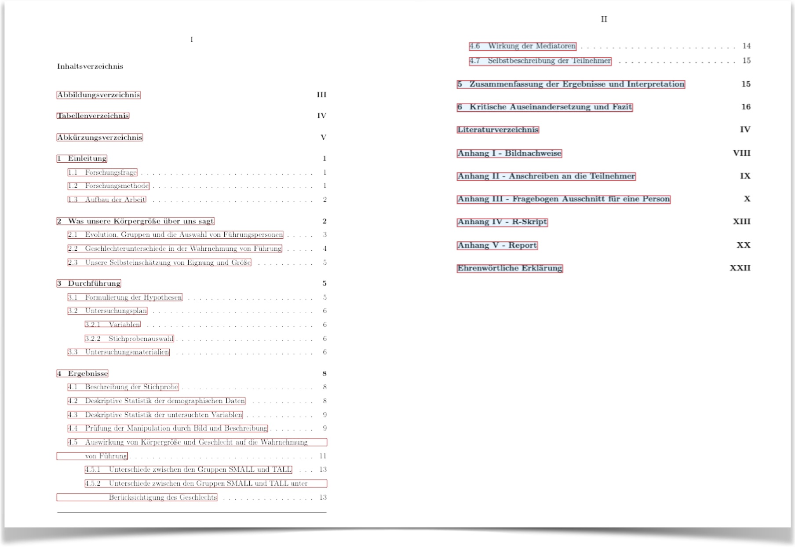
Übungsaufgabe 4.2 (Wie verlinkt man eine Gliederung?) Wie man in Abbildung 4.4 sieht (links), sind die Kapitel (und offenbar Unterkapitel) verlinkt in der PDF-Datei. Probieren Sie, ob Sie das mit Ihrem Schreibprogramm (z.B. Word) auch hinkriegen.\(\square\)
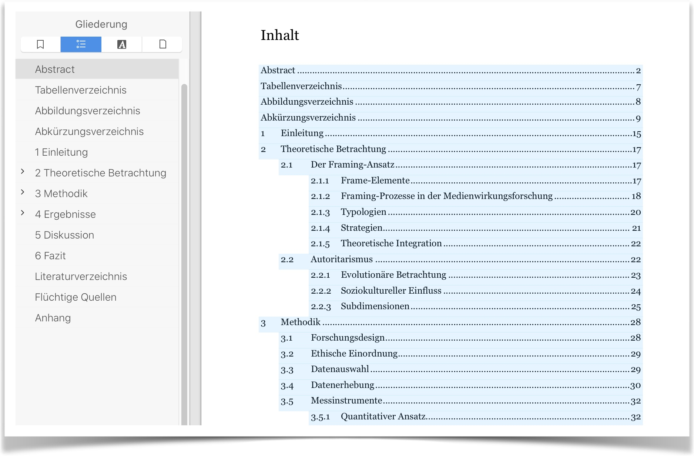
4.4.4 Einleitung
Die Einleitung stellt die Forschungsfrage vor und erläutert ihre Relevanz. Sonst passiert in der Einleiutng nichts, s. Abbildung 4.5. Ausnahme: Es kann ein Hintergrund zur Forschungsfrage angefüht werden oder anders zur Forschungsfrage hingeleitet werden z. B. durch einen aktuellen Bezug oder persönliches Interesse. Spielt Letzteres eine Rolle, so ist es die einzige Stelle in der Arbeit, in der ein persönlicher Bezug auftaucht. Die Forschungsfrage darf noch etwas vage und nicht wohldefiniert sein. Fachbegriffe etc. werden ja erst im Theorieteil eingeführt.
Hinweis
In der Einleitung schreibt man noch nichts über die theoretischen Grundlagen Ihrer Studie.\(\square\)
flowchart LR A[Hintergrund]---B[Forschungsfrage] B---C[Relevanz]
4.4.5 Theorieteil
Der Theorieteil stellt alle relevanten theoretischen Bezüge zur Forschungsfrage her.
Im Theorieteil steht alles, was für die Forschungsfrage von Belang ist – sonst nichts. Insofern kann der Theorieteil als Ausformulierung der Forschungsfrage verstanden werden.
Als „Zuhörer“ sollte ein Fachkollege vorgestellt werden. Beispiel: Bei einer Studie zur Frage, ob die individuelle Ausprägung von Impression Management mit höherer Neigung zum Tragen von Luxusuhren einher geht, sollte auf aktuellen Modelle zu diesem Zusammenhang sowie den beiden einzelnen Konstrukten eingegangen werden. Erschöpft sich der Theorieteil auf die Diskussion von „Persönlichkeit“ auf dem Niveau eines Einführungskapitels im Lehrbuch, so wird der Theorieteil seiner Anforderung nicht gerecht.
Die (Sach-)Hypothesen können am Ende des Theorieteils platziert werden.
Vorsicht
Ein häufiger Fehler ist, dass der Theorieteil über alles mögliche berichtet, aber nicht über die Bestandteile der Forschungsfrage. Verzichten Sie auf Abschnitte wie “Die Geschichte des Konstrukts X in den letzten 300 Jahren”. Merke: Im Theorieteil wird die Forschungsfrage erläutert, sonst nichts.\(\square\)
Häufig sind Forschungsfragen in der Form “X führt zu Y” aufgebaut, s. Abbildung 3.3. In dem Fall besteht Ihre Studie inhaltlich aus folgenden drei Teilen:
- X
- Y
- Zusammenhang von X und Y (häufig kausal)
Entsprechend schreiben Sie also im Theorieteil über diese drei Teile (und über nichts anderes), s. Abbildung 4.6. Es bieten sich also drei Unterkapitel des Theorieteils an. Allerdings sind auch andere Untergliederungen Ihres Theoreteils möglich. So fließt der Zusammenhang von X und Y häufig schon in die Erläuterung von X und Y ein.
flowchart LR X-->Y-->Z[Zusammenhang von X und Y]
Beispiel 4.1 (Beispiel für den Aufbau eines Theorieteils: Statussymbole und Online-Dating) Ihre Forschungsfrage lautet: “Haben Statussymbole einen Einfluss auf den Erfolg beim Online-Dating?”. Bei dieser Fragestellung sollten Sie drei Aspekte im Theorieteil erörtern:
- Psychologie des sozialen Status
- Partnerschaft/Partnersuche
- Der kausale Zusammenhang von Status und Partnersuche, z. B. aus Sicht der Evolutionspsychologie
Ggf. sind noch Teile wie „Besonderheiten des Online-Datings“ etc. zu ergänzen.\(\square\)
Beispiel 4.2 (Beispiel für den Aufbau eines Theorieteils: Wirkfaktoren von Achtsamkeit) Ihre Forschungsfrage lautet: “Wirkfaktoren von Achtsamkeit: Wirkt Achtsamkeit durch Verringerung der affektiven Reaktivität?”. Bei dieser Fragestellung sollten Sie drei Aspekte im Theorieteil erörtern:
- Achtsamkeit
- Affektive Reaktivität
- Der kausale Zusammenhang beider Konstrukte
Eine Gliederung könnte so aussehen:
- Achtsamkeit 1.1 Historisch-theoretische Entwicklung des Konzepts Achtsamkeit 1.2 Definitionen 1.3 Abgrenzungen zu benachbarten Konstrukten 1.4 Kontexte 1.5 Diagnostik
- Wirkforschung 2.1 Definitionen 2.2 Entspannungsreaktion 2.3 Reperceving 2.4 Desidentifikation 2.5 Erfahrungsaussetzung
- Affektive Reaktivität 3.1 BIS-/BAS-Konzept 3.2 Buddhistische Psychologie 3.3 Verwandte Konstrukte
- Bewertung des Forschungsstands
- Hypothesen
\(\square\)
4.4.6 Methodenteil
In diesem Teil beschreiben Sie alle relevanten Verfahrensdetails – man sollte Ihre Studie „nachkochen“ können. Ihre Studie sollte also reproduzierbar sein. Die von ihnen gemachten Angaben müssen ausreichen, um die beschriebene Untersuchung exakt zu wiederholen. Man sollte allgemein bekannte Verfahren (z.B. die Regressionsanalyse) nicht erläutern.
Folgende Unterkapitel bieten sich an:
4.4.6.1 Stichprobe
- Alter und Geschlecht der Versuchsteilnehmer (evtl. weitere Merkmale wie Beruf etc.)
- Rekrutierungsweise & Teilnahmemotivation der Versuchsteilnehmer
4.4.6.2 Versuchsmaterial
- Verwendete Fragebögen/ Messinstrumente (inkl. zentrale Maße der Güte)
- Beschreibung des Versuchsaufbaus (Materialanordnung, Sitzanordnung im Labor; Nutzung von Abbildungen ist hierbei hilfreich)
4.4.6.3 Versuchsaufbau
- Erläuterung des Versuchsablaufs von der Instruktion bis zur abschließenden Aufklärung der Untersuchungsteilnehmer nach Abschluss der Datenerhebung
- Beschreibung der räumlichen und zeitlichen Untersuchungsbedingungen
- Versuchsplan (Design): UV, AV, Designart (z. B. querschnittliche Beobachtungsstudie)
Fügen Sie keine R-Syntax ein (schon gar nicht als Screenshot); nutzen Sie für Syntax den Anhang.
4.4.7 Ergebnisteil
Im Ergebnisteil stehen die Fakten. Erst in der Diskussion wird erörtert, was die Ergebnisse bedeuten, wie stichhaltig sie sind etc. Anders gesagt: Im Ergebnisteil bespricht man die Ergebnisse. In der Diskussion spricht man über die (bzw. die Bedeutung der) Ergebnisse. In quantitativen Studien werden primär die Ergebnisse zu den Hypothesen bzw. den Forschungsfragen berichtet (sofern es keine explorative Arbeit ist). Hierbei bietet es sich an, zuerst einfache (deskriptive) Ergebnisse zu berichten und danach komplexere (z.B. von multiplen Regressionen). Handlungen werden in der 1. Vergangenheit beschrieben („Es fand sich ein Unterschied …“); überdauernde Tatsachen hingegen in der Gegenwart („Dieser Wert ist statistisch signifikant“). Im Ergebnisteil soll man keine Interpretationen oder Bewertungen anführen, sondern lediglich so objektiv wie möglich Tatschen (Fakten) berichten. In quantitativen Arbeiten findet man naturgemäß oft viele Statistiken. Wer hätt’s gedacht. Berichtet man ein Ergebnis mit wenig Zahlenmaterial, so gibt man die Zahlen im Text wieder; größere Mengen sind übersichtlicher in Tabellen dargestellt. Sehr große Zahlenmengen sind besser im Anhang aufgehoben. Häufig kann man quantitative Daten gut in Diagrammen darstellen. Man beachte die Vorgaben der APA zur Darstellung von Statistiken.
So können Sie Ihren Ergebnisteil gliedern:
- Allgemeine deskriptive Ergebnisse (noch nicht auf Hypothesen bezogen): Hier könnten Sie z.B. die Mittelwerte und Streuungen pro Gruppe berichten oder die Korrelationen der Variablen untereinander.
- Zentrale Ergebnisse pro Hypothese/für das Modell: Berichten der verwendeten Verfahren und der Statistiken zu den zentralen Ergebnissen.
- Ggf. sonstige explorative Ergebnisse: Ergebnisse also, die Sie nicht erwartet haben (d.h. nicht in den Hypothesen formuliert waren)
Im Ergebnisteil berichten Sie die Ergebnisse Ihrer empirischer Studie, statistische Kennzahlen in den meisten Fällen. Es gibt drei Formate, Statistiken zu berichten: im Text, in einer Tabelle, mit einer Abbildung.
4.4.7.1 Formatierung von Tabellen
Ein Beispiel für eine Tabelle zur Untersuchung von Korrelation, die nach APA (V7) formatiert ist, zeigt Abbildung 4.7.
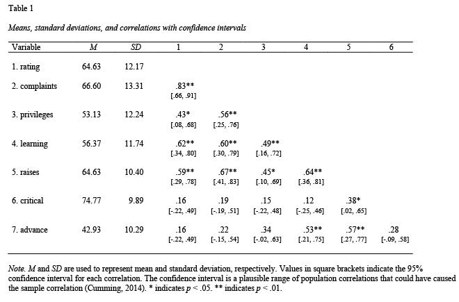
Man kann solche Tabellen von “Hand” erstellen, oder man nutzt Hilfen wie z.B. das R-Paket apaTables, welche Tabellen im APA-Format erstellt und in Word exportiert.
Betrachten wir ein Beispiel anhand des Datensatzes mtcars1, wie man mit apaTables eine Korrelationstabelle erstellt.
library(apaTables)
data(mtcars)
apa.cor.table(mtcars, filename = "apa_cor_tab_mtcars.doc", table.number = 2)Übungsaufgabe 4.3 (Merkmale eine Tabelle nach APA7) Betrachten Sie dieses Beispiel für eine Tabelle! Arbeiten Sie die wesentlichen Merkmale der Formatierung heraus.\(\square\)
Aber was sind die Bestandteile des APA-Formats? Schauen Sie sich dazu Abbildung 4.8 an, in der Abbildung sind wesentliche Merkmale des APA-Formats hervorgehoben.
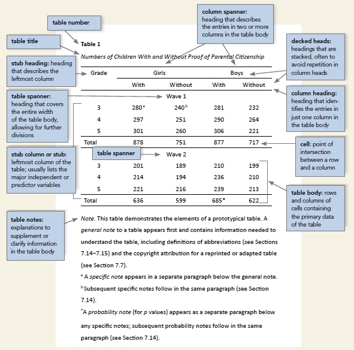
Ein Beispiel für eine Tabelle mit Regressionsergebnissen finden Sie hier.
4.4.7.2 Formatierung von Abbildungen
Abbildungen sollten nur verwendet werden, wenn sie einen Mehrwert bieten. Für eine einzelne Zahl oder für wenige Zahlen lohnt sich meist eine Abbildung nicht; es reicht, die Zahlen im Text anzuführen.
Nach APA7 steht die Nummer der Abbildung über der Abbildung, z.B. “Abbildung 1”; es folgt kein Punkt. In der nächsten Zeile steht der Titel der Abbildung, wiederum ohne Punkt am Ende. Wichtig ist, dass die Abbildung für sich selbst genommen verständlich ist. Farben können verwendet werden, soweit nützlich, aber sollten idealerweise auch im Schwarz-Weiß-Druck erkennbar sein. Hilfreich ist es zudem, wenn die Ungewissheit in den Kennzahlen durch Fehlerbalken verdeutlicht ist. Abbildung 4.9 verdeutlicht diese Aspekte der Formatierung einer Abbildung (in englischer Sprache in diesem Fall).
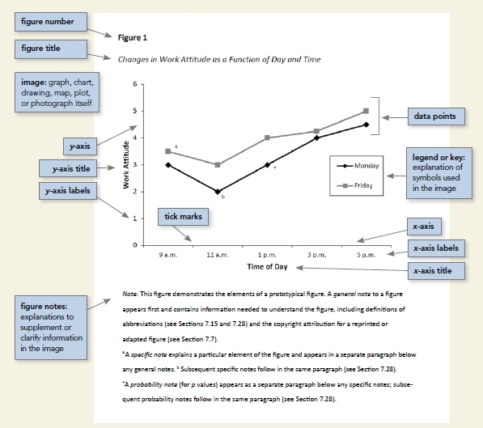
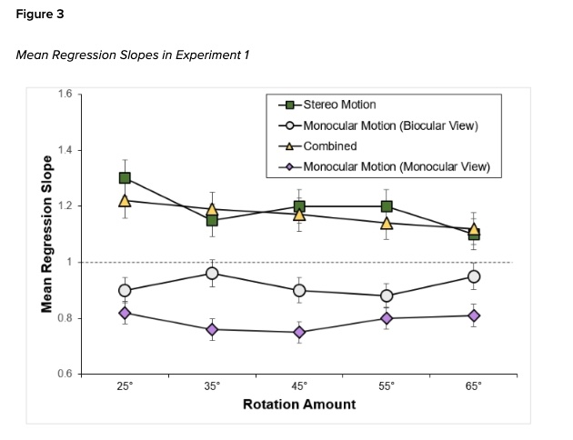
Quelle der Abbildung, Urspüngliche Quelle der Abbildung
Eine nützliche Hilfe zur Erstellung von hochwertigen Diagrammen sind die R-Pakete ggpubr und ggstatsplot, s. Abbildung 4.10.
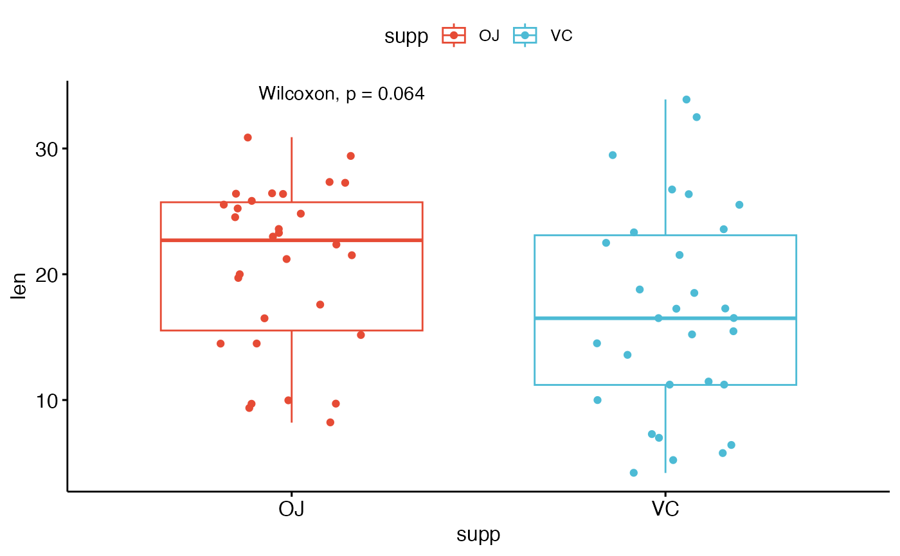
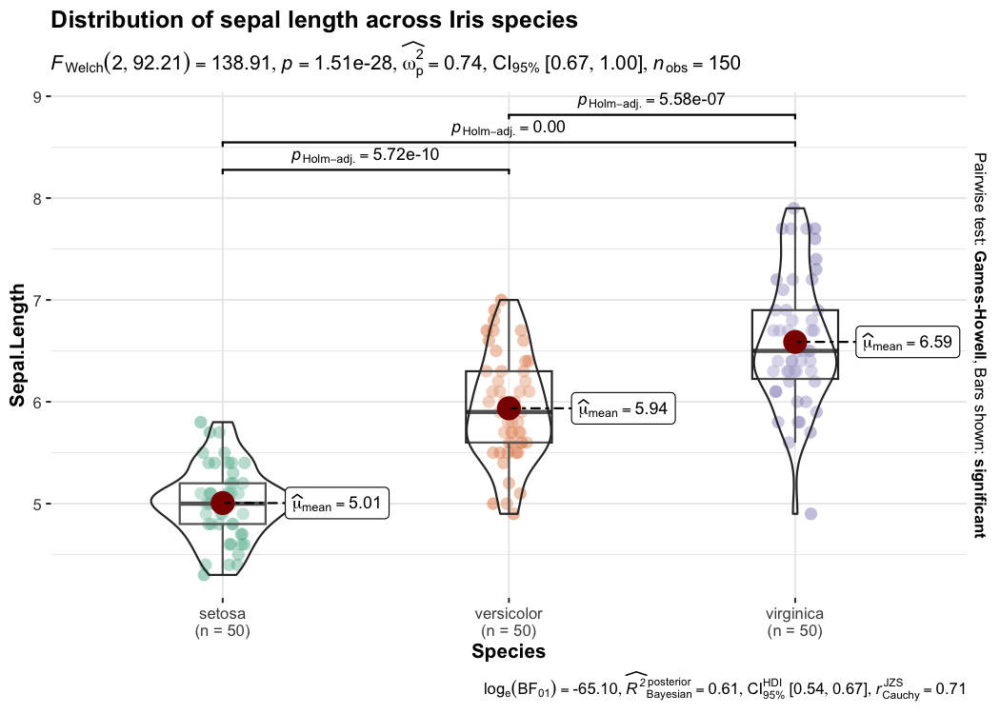
Die Nummer der Abbildung fügen Sie von “Hand” hinzu (z.B. in Word). Zu beachten ist, dass die Statistiken in Abbildung 4.10 (b) laut APA als Anmerkung unter der Abbildung gestellt werden müssen, vgl. Abbildung 4.9 (a). Weitere Hinweise finden Sie hier.
4.4.7.3 Statistik im Text
Dazu später mehr, s. Kapitel zur Datenanalyse.
4.4.8 Diskussion
ie Diskussion beinhaltet den Kommentar des Autors (neutral formuliert) zu seinen Ergebnissen im Bezug zum in der Einleitung beschriebenen aktuellen theoretischem und empirischem Wissensstand. Der besondere wissenschaftliche Beitrag der durchgeführten Untersuchung wird dargestellt. Zu Beginn der Diskussion sollten eine kritische Zusammenfassung der hypothesenbezogenen Hauptergebnisse gegeben werde und diese Befunde mit anderen Untersuchungsergebnissen verglichen werden. Ein psychologisch (theoretisch) sinnvoller Erklärungsansatz für die Hauptbefunde sollte dargestellt werden und die Ergebnisse auch im Hinblick auf andere Erklärungsversuche diskutiert werden. Ggf. müssen (mögliche) Gründe angegeben werden, warum die Ergebnisse die Hypothesen nicht bestätigen bzw. nur tendenziell. Wichtig ist die Diskussion der Schwächen (Limitationen) der vorliegenden Studie; widmen Sie diesem Punkt einen eigenen Absatz. Als Abschluss der Diskussion sollten Verbesserungsvorschläge für eine nochmalige Durchführung der Untersuchung beschrieben werden sowie Vorschläge für weitere Untersuchungsansätze gegeben werden. Erörtern Sie Ihre Ergebnisse auch vor den Hintergrund anderer Studien/der Literatur, d. h. Die Ergebnisse sollten in die Literatur rückbezogen werden.
4.4.9 Literaturverzeichnis
Im Literaturverzeichnis einer wissenschaftlichen Arbeit (einer Seminararbeit/ Thesis/ eines Exposés) steht genau die zitierte Literatur – nicht mehr, nicht weniger. Das Literaturverzeichnis ist nach den Regeln des verwendeten Zitierstils zu gestalten (empfehlenswert: DGPs in neuester Version). Das Literaturverzeichnis sollte linksbündig formatiert sein. Bei mehrzeiligen Einträgen wird ab der 2. Zeile eingerückt (5-7 Leerzeichen). Die Qualität der Quellen ist eine wichtige Beurteilungsgrundlage des Literaturverzeichnisses: Bücher wie Dobelli und Lang (2011) sind nicht hohes Niveau (aber gut geeignet, um ins Thema einzufinden und sich zu insprieren). kahneman2012schnelles ist hingegen ein akzeptabler (guter) Vertreter eines Buchs aus dem Genre des Popscience. Hochwertige Literaturstellen sind zumeist/hauptsächlich Fachartikel oder Review-Artikel. Da die meiste (95%?) der relevanten Literatur in Englisch verfasst wird, ist davon auszugehen, dass ein rein deutschsprachiges Literaturverzeichnis den Forschungsstand schlecht (in nicht akzeptabler Weise) abbildet. Daher sollten englischsprachige Artikel reichhaltig verwendet werden.
Hinweis
Fachartikel sind die Literaturart der Forschung. Nutzen Sie sie reichlich.\(\square\)
4.4.10 Anhang
Im Anhang stehen Details zu Ihrer Studie. Die einzelnen Teile des Anhangs werden durchnummeriert. Alle Inhalte des Anhangs müssen im Haupttext referenziert werden („Der Interviewleitfaden findet sich im Anhang B“.). Typische Inhalte des Anhangs sind: Details zu Messinstrumenten, Interviewleitfäden oder Stimuli, weiterführende Statistiken, Syntax oder Probandeninformationen. Die ehrenwörtliche Erklärung steht ebenfalls im Anhang. Eine Funktion des Anhangs ist es, die Informationen, die zur Reproduktion der Studie nötig sind, im Detail vorzuhalten.
4.5 Schreibstil
4.5.1 Titel
Der Titel Ihrer Arbeit präzise sein, d.h. konkret genug und passend gewählt sein muss, dass die damit von Ihnen angekündigte Fragestellung auch beantwortet werden kann Andererseits sollte ein Titel auch interessant sein, also Lust machen, die Arbeit zu lesen. Häufig ist es sinnvoll, Ihrer Forschungsfrage (zugespitzt) zu formulieren und Hinweise zur Art der empirischen Studie zu geben (z.B. querschnittliche Beobachtungsstudie).
Beispiel 4.3 (Beispiele für gute Titel von Forschungsarbeiten)
- Der Einfluss von Autonomie am Arbeitsplatz auf Arbeitsmotivation – eine Moderatoranalyse unter besonderer Berücksichtigung des Bedürfnisses nach Autonomie
- Der Zusammenhang von flexibler Arbeit, selbstbestimmte Arbeitsmotivation und Wohlbefinden – eine quantitative empirische Untersuchung
- Selbstbestimmte Arbeitsmotivation und Work Engagement als Prädiktoren für das habituelle Wohlbefinden – eine randomisiertes Feldexperiment\(\square\)
4.5.2 Grundregeln wissenschaftlichen Formulierens
- Klare, verständliche Sprache
- Kurze Sätze
- Nicht wertend
- Bevorzugt in der dritten Person
- “Ich”/“Wir” sparsam verwenden
- „Die Überprüfung der Hypothesen erfolgte mittels Regressionsanalyse.“
- „Die Hypothesenprüfung erfolgt mittels Regressionsanalyse.“
- „Gemäß der Annahmen…“,
- „Ausgehend von den bisherigen Forschungsbefunden ist zu vermuten…“
- „Als theoretisches Fundament dient die Theorie von …“.
- Eher Aktiv statt passiv:
- „In der vorliegenden Studie werden Effekte des … untersucht“. „Die zentrale Hypothese ist …“ - „Die Analyse von Blickbewegungsdaten offenbart …“.
- „Die Analyse von Blickbewegungen offenbart, dass …“.
Hinweis
Merke: Geschickte Formulierung umgeht die Aktiv-Passiv-Ich-Wir-Frage. Verben statt Nomen verwenden (gut: überprüfen; weniger gut: Überprüfung)
4.5.3 Tempus
Präsens als Zeitform zum Beschreiben des Vorhabens und zur Ergebnisdarstellung, deren Erkenntnisse andauern:
- „Die Ergebnisse zeigen…“.
- „Menschen streben nach Freiheit, so Müller (2019) …“.
- „Ein Schwachpunkt dieser Theorie ist …“.
Vergangenheitsform als Zeitform zum Berichten von Befunden anderer Autoren und zur Beschreibung des methodischen Vorgehens
- „Voss, Rothermund, und Brandstätter (2008) untersuchten mit einer Farbfeldaufgabe den Einfluss von Motiven auf die Bewertung von Farbanteilen…“.
- „Der Anker wurde variiert indem…“.
- „Frauen parkten im Mittel schneller aus als Männer“.
4.5.4 Formulierungshilfen
- Nach Meinung/Auffassung von Müller ist …
- Meier vertritt dabei die Position …
- So akzentuiert der Autor2, dass … -…, so der Autor, …
- Dieser Umstand sei …
- Der Autor betont nach hier vertretener Auffassung zu Recht die Perspektive, dass …, denn … - - Ohne dies zu begründen, stellt der Autor die These auf, dass …
- Allerdings verzichtet der Autor darauf, zu explizieren, dass …
- Implizit bringt Smith hiermit seine eigene Ansicht zum Ausdruck, dass …
- Anhand dieser Kernaussage wird deutlich, dass ihre Einstellung zu …
4.5.5 Fremdwörter
Hinweis
tldr: Fremdwörter beugen sich der deutschen Rechtschreibung Quelle.\(\square\)
Wörter und Wortgruppen, die als Zitate aus einer fremden Sprache angesehen werden, bleiben in der Schreibung meist völlig unverändert (Duden D39): cum grano salis, ad nauseam, Open Science Framework, standard deviation, null hypothesis.
Solche „Zitatwörter“ sind in der ersten Aufführung im Text mit Kursivdruck zu kennzeichnen, es sei denn, sie können als allgemein bekannt vorausgesetzt werden.
Englische Begriffe im Fließtext sollten i. A. nicht als Zitate gesetzt sein, sondern den Regeln der deutschen Rechtschreibung unterworfen werden.
Bei mehrteiligen Substantiven und substantivischen Aneinanderreihungen werden das erste Wort und die substantivischen Bestandteile großgeschrieben (Duden D40): Der Status quo, der Duty-free-Shop, die Multiple-Choice-Aufgabe, das Small-N-large-pProblem, Browser, Download, Mindmap, Meeting, Fastfood, Mountainbike, Deadline.
Zusammengesetzte Fremdwörter werden zusammengeschrieben (Duden D41). Besteht die Zusammensetzung aus Substantiven, kann zur besseren Lesbarkeit ein Bindestrich gesetzt werden: Desktop-Publishing, Business-Case, Turnaround, E-Mail, AssessmentCenter, Human-Resources-Manager, Burn-out-Syndrom, Chill-out-Room, Changemanagement.
ABER 1: Ist der erste Bestandteil ein Adjektiv, so gilt in Anlehnung an die Herkunftssprache Getrenntschreibung: Hot Spot, Top Ten, Electronic Banking, Digital Rights, Human Resources, Private Equity, New Economy, Happy Hour, Open Air, Social Media, Open Source.
ABER 2: Namen aus mehreren Teilen werden auseinander geschrieben: Hells Angels, New York.
Bei Substantivierungen aus dem Englischen, die auf eine Verbindung aus Verb und Partikel (Adverb) zurückgehen, setzt man gewöhnlich einen Bindestrich; daneben ist auch Zusammenschreibung möglich: Black-out, Count-Down, Kick-off, Check-in, Makeup.
Aneinanderreihungen und Zusammensetzungen mit Wortgruppen schreibt man mit Bindestrich (Duden D42): R-Syntax, Knew-it-allalong-Effekt, Due-Dilligence-Prüfung.
4.5.6 Gendern
Sie können selber entscheiden, ob und welche Form des Genderns Sie verwenden. Wichtig ist, dass Sie dann konsequent bei einer gewählten Form bleiben.
4.6 Formatierung
4.6.1 Richtlinien
Solange Sie keine anders lautenden Vorgaben von Ihrer Betreuungsperson haben, können Sie sich an diesen Richtlinien orientieren.
- Verwenden Sie die Format-Vorgaben der APA (aktuelle Version)3, um Zitationen, Tabellen und Abbildungen zu formatieren.
- Fließtext (in längeren Print-Dokumenten wie einer Seminararbeit) ist mit Serifentext zu schreiben; Überschriften können serifenlos gesetzt sein.
- Fließtext soll in 11 Punkt Schriftgröße gesetzt sein.
- Der Text kann linksbündig oder im Blocksatz gesetzt sein.
- Silbentrennung ist eingeschaltet.
- Zeilenabstand: 1 – 1,2 Zeilen
- Seitenformat (für papierbezogenen Formate): Din-A4
- Einrücken: Die erste Zeile jedes Absatzes wird mit 1.3 cm eingerückt (Ausnahme: Abstract, Titel, Blockzitate und Verzeichnisse). Der erste Absatz nach einer Überschrift, nach einer Abbildung, einer Tabelle o.Ä. wird nicht eingerückt. Alternativ können Sie vertikalen Raum verwenden, um Absätze zu trennen (besser ist aber Einrücken).
- Kursivschrift: Sie dürfen Kursivschrift verwenden, wenn Sie etwas hervorheben oder betonen möchten oder bei erstmaliger Einführung neugeprägter Begriffe, Fach- oder Schlüsselbegriffen, bei statistischen Symbolen und Variablen. Meiden Sie Fettdruck und Unterstreichungen.
- Abschnittswechsel: Vertikaler Abstand ist ein probates Mittel, um Sinnzusammenhänge kenntlich zu machen. Ein neuer Abschnitt wird mit vertikalem Abstand kenntlich gemacht. Gestalten Sie Ihre Seiten doppelseitig (d. h. linke vs. rechte Seite), auch im Druck.
- Kolumnentitel (Kapitelnummer und -name in Kopfzeile) sind empfehlenswert.
- Nummerierung: Verwenden Sie nur arabische („normale“) Ziffern für die Seitenzahlen (auch bei Abstract etc.).
- Seitenränder: Da eine gute Lesbarkeit bei nicht mehr als ca. 65 Zeichen liegt, können Sie Ihre Seitenränder entsprechend einstellen.
4.6.2 Seitenränder und Satzspiegel
Definition 4.1 (Typografie) Die Typografie ist die Lehre der ästhetischen und funktionalen Gestaltung der Gestaltung von Schriftwerken z.B. des Satzspiegels, der Buchstaben, Satzzeichen und Schriften (Gulbins und Kahrmann 2000).\(\square\)
Definition 4.2 (Satzspiegel) Der Satzspiegel defineirt die Nutzfläche einer Seite (im Gegensatz zum Gesamtplatz und leerem Platz).\(\square\)
Ein Satzspiegel wird dann als ästhetisch empfunden, wenn sich (selbst-)ähnliche Proportionen wiederfinden. Die Länge einer Zeile sollte sich nach der optimalen Lesbarkeit ausrichten, für die ca. 65 Zeichen angenommen werden. Papierseiten nach Din-Normen haben ein Seitenverhältnis von ca. 1:1.4. Ein Satzspiegel im gleichen Verhältnis ist ästhetisch. Ein weiterer klassischer Satzspiegel ist nach dem Goldenen Schnitt aufgebaut.
Abbildung 4.11 stellt die Namen der “Seitenränder”, der sog. Stege vor.
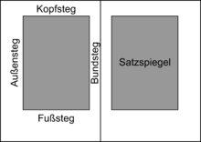
Eine mögliche (und optisch ansprechende) Aufteilung der Seite ist die Rasterteilung, s. Abbildung 4.12. Üblich sind 9 x 9 Felder, die sog. Neunerteilung. Diese Aufteilung liefert fast die gleichen Maßstäbe wie eine Aufteilung nach dem Goldenen Schnitt. Eine A4-Seite hat folgende Maße: 210mm x 297mm (21cm x 29,7cm). Bei der Neuneraufteilung hat ein Feld also folgend Größe: 23mm x 33mm (2,33cm x 3,3cm).
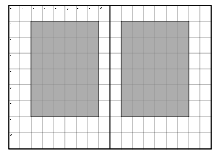
| Formataspekt | Maße in mm |
|---|---|
| Bundsteg | 23 |
| Kopfsteg | 33 |
| Außensteg | 47 |
| Fußsteg | 66 |
| Textbreite | 140 |
| Texthöhe | 198 |
Die zehn Gebote der Textformatierung:
- Du sollst nicht auseinanderreißen die Worte, die zusammengehören.
- Du sollst den guten Abstand wahren (ein kurzes Leerzeichen) zwischen Kürzeln wie z. B., u. a., etc. oder vor X % (falsch: z. B., richtig: z. B.).
- Du sollst den Unterschied zwischen Bindestrich (-) und Gedankenstrich (–) in Ehren halten. Meide den amerikanischen Geviert-Strich (–).
- Du sollst der deutschen Rechtschreibung keine Gewalt antun, indem du das Apostroph falsch einsetzt (falsch: Sebastian’s Bar, falsch: Geht`s gut?).
- Ein Ästhet verstehe sich mit den Ligaturen.
- Du sollst eines Absatzes letzte Zeile nicht auf der Folgeseite vereinsamen lassen; du sollst die erste Zeile eines Absatzes nicht als letzte Zeile unten auf der Seite beginnen lassen.
- Du sollst eine Seite nicht aufschreien lassen in der Agonie vollgequetschten Textes. Lass ihr Luft zum Atmen auf dass sie sich ihres Daseins erfreue.
- Teile und herrsche durch räumliche Nähe; lass zusammen die Gedanken, die zusammen gehören (Absätze) und teile die, die nicht eines Fleisches sind (verschiedene Gedanken). Ein Absatz weise ca. 5-15 Zeilen auf.
- Der gute Hirt eines Textes gliedere den Satzspiegel wohl; den goldenen Schnitt habe er stets im Hinterkopf.
- Meister der Kunst wissen um die Nähe einzelner Buchstaben und sorgen für das rechte Maße an Nähe und Ferne (vgl. Unterschneidung, engl. kerning).
Hier findet sich mehr zum Thema Typographie.
4.6.3 Urheberrecht
Prüfen Sie die Nutzungsrechte bzw. die Nutzungslizenzen eines Werkes, bevor Sie es übernehmen. Urheberrechtlich geschützten Werken (wie Abbildungen) dürfen Sie nicht ohne schriftliche Genehmigung des Inhabers des Urheberrechts einer Abbildung übernehmen – auch nicht in leicht abgeänderter Form.
Bei permissiven Nutzungslizenzen wie CC-BY ist die Nutzung hingegen erlaubt. Es empfiehlt sich für wissenschaftliche Zwecke, Werke mit permissiven Nutzungsrechten zu nutzen. Es gibt zwar ein Zitatrecht für Bilder (§51 UrhG), doch ist es im Einzelfall nicht einfach, korrekt anzuwenden:︎ Zulässig ist die Vervielfältigung, Verbreitung und öffentliche Wiedergabe eines veröffentlichten Werkes zum Zweck des Zitats, sofern die Nutzung in ihrem Umfang durch den besonderen Zweck gerechtfertigt ist. Zulässig ist dies insbesondere, wenn einzelne Werke nach der Veröffentlichung in ein selbständiges wissenschaftliches Werk zur Erläuterung des Inhalts aufgenommen werden Letzter Absatz lässt sich so interpretieren, dass der Text ohne Bild verständlich sein muss. Hey, das hier ist keine Rechtsberatung 🤓🤪 Für Zwecke der Lehre gelten laxere Regeln (§ 60 UrhG).
4.6.4 Schreibprogramme
Der Klassiker für Software zur Erstellung von Texten ist vermutlich MS Word. Es gibt aber Alternativen, die sich für kollaboratives Schreiben besser eignen, etwa Google Docs. Google Docs unterstützt auch ein Zotero-Plugin, was für wissenschaftliche Dokumente ein Muss ist. Technikfreunde mit Zukunftsblick schreiben vielleicht Ihr Dokument mit Markdown. Die neueste Variante von Markdown ist Quarto.
4.6.5 Word-Checkas
Erläutern und demonstrieren Sie folgende Word-Formatierungsfunktionen:
- Verzeichnisse verlinken
- Gliederungsstruktur im PDF erstellen
- Formeln und griechische Buchstaben einfügen
- „Gitterstäbe“ (vertikale Trennlinien) aus Tabellen entfernen
- Abbildungsverzeichnis erstellen
- Inhaltsverzeichnis verlinken
- Wechselnde Kopfzeilen (z.B. für Kapitelüberschriften)
- Geschützte Leerzeichen und schmales (geschütztes) Leerzeichen abdrucken
- Zitationen verlinken
- Silbentrennung aktivieren
- „Schusterjungen“ und „Witwen“ vermeiden
- Formatvorlagen definieren
- Ligaturen verwenden
- Unterschneidung aktivieren
- Pixelige Bilder vermeiden
- Sonstiges ???\(\square\)